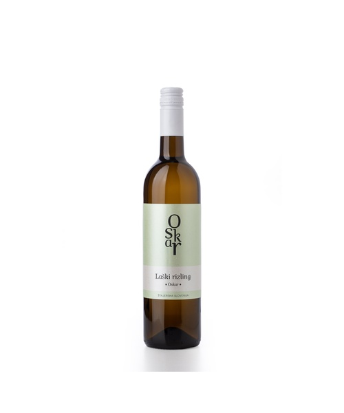
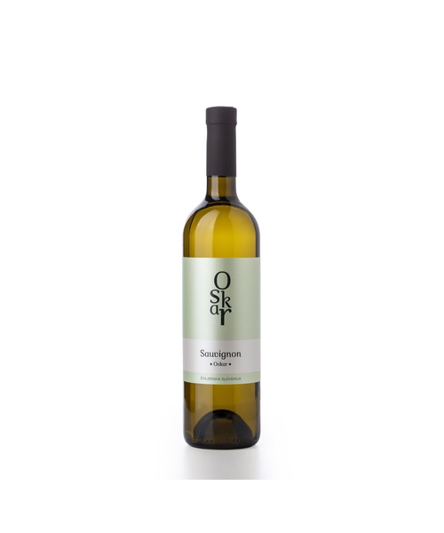
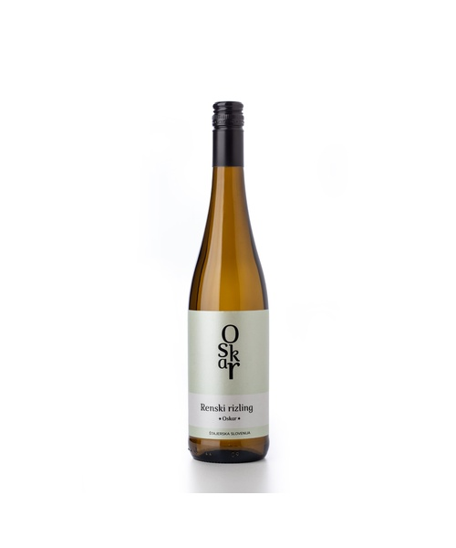
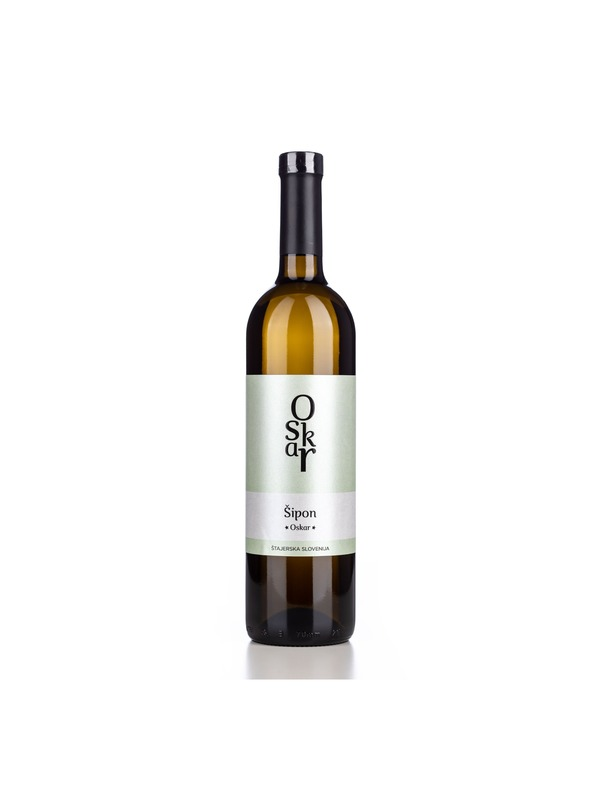
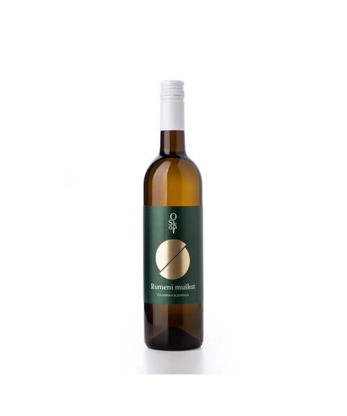
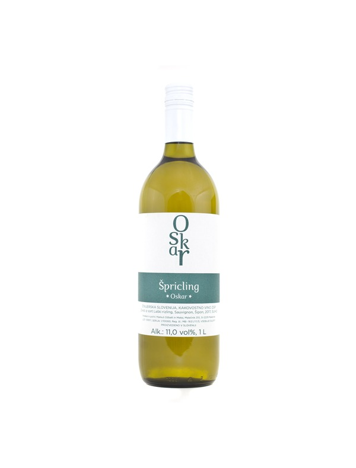

Classic Vina
Harmonija štajerskega terroirja
Naša bela vina so lahka, osvežujoča in bogata z aromami. Sončne lege Malečnika, laporna prst ter svež nočni vetrič s Pohorja dajejo grozdju izjemno aromatiko, prijetno mineralnost ter harmonično kislino.

Laški Rizling
Prijeten suh štajerski Laški rizling z uravnoteženo kislino in nekaj grami sladkorja, ki mu dajejo svežino, harmonijo in izjemno pitkost.
9,49€ Naroči
Sauvignon
Nežna sortna aromatika se prepleta z bogatim pookusom, ki je rezultat večmesečnega zorenja na drožeh. Živahna kislina vinu daje svežino, harmonijo in odlično pitkost.
9,49€ Naroči
Renski rizling
Prepoznavna renska nota se na nosu prepleta z elegantnim mineralnim značajem in popolnoma suhim pookusom. Osemmesečno zorenje na drožeh vinu daje dodatno eleganco in krepkost.
9,49€ Naroči
Šipon
Suhi Šipon navdušuje s svežino in izrazito sadnostjo, ki se nadaljuje v prijetnem in bogatem pookusu. Živahna kislina mu daje značaj in odlično pitkost.
9,49€ Naroči
Rumeni Muškat
Aromatičen in privlačen na nosu, v ustih pa bogat in sočen z nežnim ostankom sladkorja. Tipični štajerski Rumeni muškat, ki s svojo izrazitostjo in svežino še vedno navdušuje.
9,49€ Naroči
Špricling
Zvrst Laškega rizlinga, Šipona in Sauvignona je lahkotno in sveže vino z ravno prav poudarjeno kislino. Odlična izbira za osvežilen štajerski špricer.
9,49€ Naroči